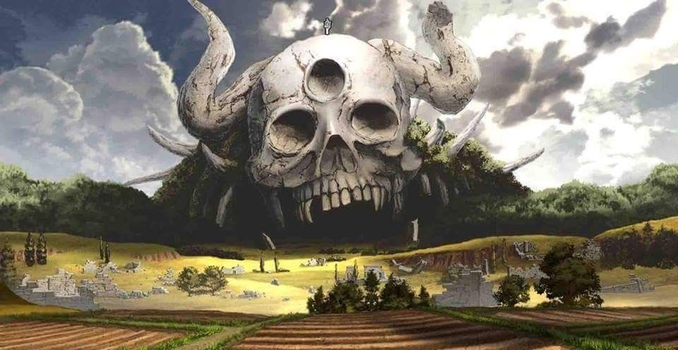
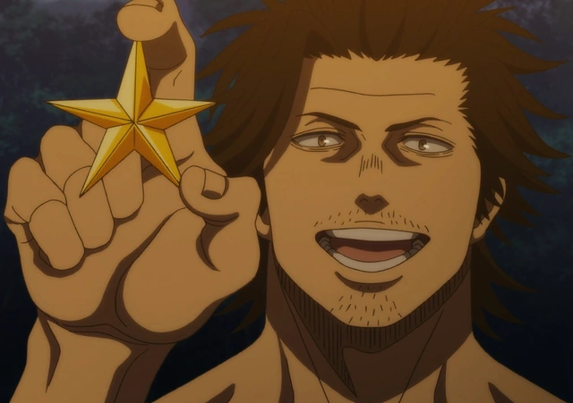
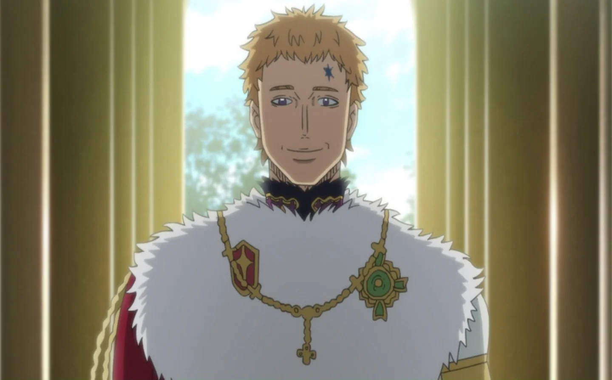

Historia Principal
Cuando la humanidad estaba a punto de caer por un demonio antiguo, un solo mago lo derrotó y la salvó. Más tarde, el mago se convirtió en una leyenda y se le conoció como Rey mago. Tras ello, el Reino del Trébol gozó de paz a través de generaciones de reyes magos y nueve órdenes mágicas subordinadas
Asta y Yuno son huérfanos que se criaron juntos desde que nacieron después de ser abandonados en un orfanato de la iglesia de Hage, ubicada en la zona olvidada del Reino del Trébol al mismo tiempo. En un mundo donde todos tienen poder mágico, Asta es el único que ha nacido sin magia, lo que lo lleva a entrenar físicamente como compensación. Por el contrario, Yuno nació como un prodigio con un inmenso poder mágico y el talento para controlarlo.
A los 15 años, Asta y Yuno tienen la capacidad de convertirse en magos conocidos como Caballeros Mágicos al recibir sus respectivos grimorios, con los que se canaliza todo el poder mágico. A Yuno se le otorga el grimorio con un trébol de cuatro hojas, que canaliza la magia de viento y que usó el primer rey mago del reino, mientras que Asta no recibe ninguno. Sin embargo, cuando un ladrón incapacita a Yuno para intentar vender su grimorio en el mercado negro, Asta convoca su propio grimorio, uno deslucido y con un trébol de cinco hojas que contiene la extraña y misteriosa antimagia (que le permite cancelar todos los efectos mágicos), para vencerlo.
La historia sigue a los dos hermanos adoptivos, separados dentro de sus órdenes de caballería, mientras mantienen una rivalidad amistosa para tratar de convertirse en el Rey Mago; no sin antes ser los caballeros mágicos más fuertes del reino.
Meritos
Los premios se distribuyen a cualquier miembro que haya dado un excelente rendimiento durante una misión. El premio viene en la forma de una estrella en la que el Rey Mago lo entrega a un Caballero Mágico individual o un grupo de Caballeros que han llevado a cabo la misión como una unidad. Al final del período de un año, que se determina como marzo hasta abril del año siguiente, se celebra un festival para celebrar sus logros y determinar el mejor escuadrón.
Rangos
Los miembros de los Caballeros Mágicos se diferencian por rangos en los que pueden representar su estado dentro de los escuadrones. El rango más alto es el Rey Mago el cual pertenece al líder de los Caballeros Mágicos. Debajo del rango de rey mago, los miembros de los Caballeros Mágicos se dividen en otros cuatro rangos en los que esos rangos se dividen en cinco clases: la 1ª clase como la más alta y la 5ª como la más baja. Una promoción a una clase más alta es posible para cada Caballero Mágico en función a su rendimiento en el que representa la cantidad de estrellas que han recogido. Los Caballeros que aspiran a obtener un ascenso deben juntar un cierto número de estrellas antes de la Ceremonia de Entrega de Méritos de Guerra para ser considerados para un ascenso.
Los rangos de los Caballeros magicos son:
- Rey Mago
- Gran Caballero Magico
- Caballero Magico Superior
- Caballero Magico Medio
- Caballero Magico Inferior
Intro anime: